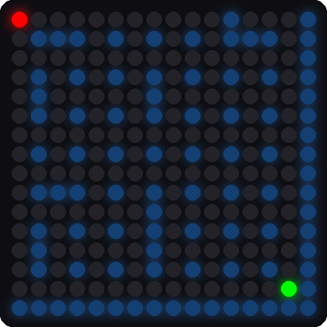
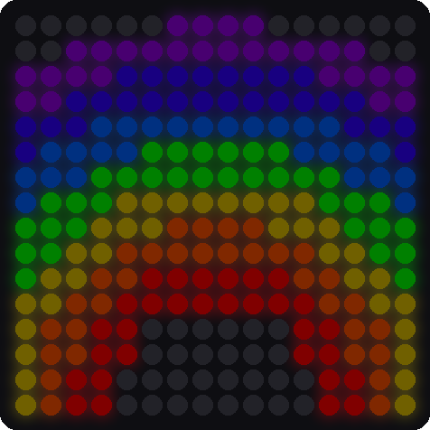
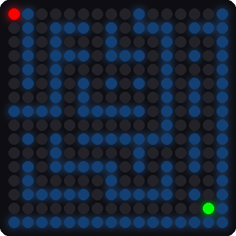
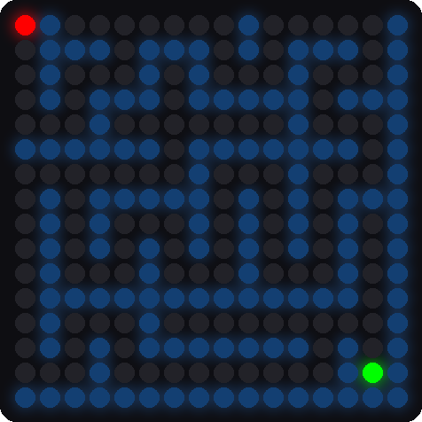

Lab 12: Tilt-a-Maze
Pixel says...
 It's game time! Roll the red ball through a maze of light blue walls to the green hole. There are nine
levels, and each one is a little harder. Let's light this up!
It's game time! Roll the red ball through a maze of light blue walls to the green hole. There are nine
levels, and each one is a little harder. Let's light this up!
Program files: 12-tilt-a-maze.py and tilt_a_maze.py
What you'll learn
- How a computer can build a maze with a few simple rules
- How a seed makes "random" numbers repeat
- How a game gets harder from level to level
- How the ball's speed depends on how far you tilt
- How the game draws the level numbers and a rainbow
What you'll need
- Your whole kit, wired as shown in the Kit Guide
- These files saved on the Pico:
config.py,kit.py,tilt_a_maze.py, and12-tilt-a-maze.py - Thonny open and connected to your Pico
- The
xyfunction from Lab 7 and the tilt from Lab 10
The program
Like Lab 11, this lab has a short file that you run and a module with the real code.
# Test 12: Tilt-a-Maze
# Filename: 12-tilt-a-maze.py
# Version: 1.1.0
#
# Tilt the board to roll the red ball through a light blue maze to the green
# hole in the opposite corner. Nine levels, then a rainbow.
# The code lives in the module tilt_a_maze.py (with the shared helpers in
# kit.py) so that program 13 can load it as a mode too. Upload all the .py
# files with ./upload-code.sh before you run this.
# Not yet tested on hardware.
import tilt_a_maze
print("Test 12: Tilt-a-Maze (version 1.1.0)")
tilt_a_maze.run()
Run 12-tilt-a-maze.py. The matrix first shows L1, and then the first maze appears. Your red ball waits in the upper-left corner. The green hole waits in the opposite corner. Tilt the kit to roll the ball. A bigger tilt rolls it faster.
When the ball falls into the hole, the hole flashes green and the next level title appears. The Shell reports your score:
Test 12: Tilt-a-Maze (version 1.1.0)
Level 1
Level 1 solved in 34 moves
Level 2
Beat level 9 and a rainbow glows across the matrix. Then the game starts over.


These pictures were drawn by a computer simulator, so your real matrix may look a little different.
How it works
Building a maze from cells
The maze uses the matrix as a grid of cells. A cell is one pixel. Between two cells sits a wall pixel that is either standing or knocked down. So an 8 by 8 grid of cells fills the matrix, and cell (cx, cy) lives at pixel (2 * cx, 2 * cy).
Here is the recipe for a maze. A recipe like this is called an algorithm.
- Start in the upper-left cell. Mark it as visited.
- Look at the cells next door that you have not visited.
- Pick one, knock down the wall between, and move there.
- If every neighbor has been visited, back up one cell.
- Stop when you have backed all the way to the start.
walls[0] = False
seen[0] = True
path = [(0, 0)]
while len(path) > 0:
cx, cy = path[-1]
options = []
for dx, dy in ((1, 0), (-1, 0), (0, 1), (0, -1)):
nx = cx + dx
ny = cy + dy
if 0 <= nx < CELLS_ACROSS and 0 <= ny < CELLS_DOWN and not seen[ny * CELLS_ACROSS + nx]:
options.append((dx, dy))
if len(options) > 0:
dx, dy = options[random_number(len(options))]
nx = cx + dx
ny = cy + dy
walls[(2 * cy + dy) * MATRIX_WIDTH + 2 * cx + dx] = False # the gap between the cells
walls[2 * ny * MATRIX_WIDTH + 2 * nx] = False # the new cell
seen[ny * CELLS_ACROSS + nx] = True
path.append((nx, ny))
else:
path.pop()
The list path remembers where you have been. The loop while len(path) > 0 keeps going until you have backed up to the start. The line random_number(len(options)) picks one of the open neighbors. When there are no options, path.pop() removes the last cell, which is the "back up" step.
This recipe visits every cell and leaves exactly one way between any two cells. No loops and no dead-end rooms you cannot reach.
Random, but the same every time
def random_number(limit):
global random_state
random_state = (random_state * 75 + 74) % 65537
return random_state % limit
A computer cannot truly pick a number at random. It follows a rule that scrambles the last number into a new one. If you start with the same first number, called the seed, you get the same list every time.
The game gives each level its own seed in MAZE_SEEDS. So level 4 is the same maze every time. The seeds were chosen so every level has a longer shortest route than the one before.
Each level is a little harder
After the recipe finishes, the game knocks down a few more walls. Those make shortcuts. Early levels get many shortcuts, and the last level gets none.
| Level | Shortcuts | Shortest route (steps) |
|---|---|---|
| 1 | 40 | 28 |
| 2 | 30 | 32 |
| 3 | 22 | 36 |
| 4 | 16 | 40 |
| 5 | 11 | 48 |
| 6 | 7 | 56 |
| 7 | 4 | 72 |
| 8 | 2 | 84 |
| 9 | 0 | 100 |
Compare a middle level with the last one. Level 5 still has a few shortcuts. Level 9 has only one way through.


These pictures were drawn by a computer simulator.
After a level, the Shell shows how many moves you used. Level 1's shortest route is 28 steps. If the Shell says Level 1 solved in 28 moves, you took the perfect path!
The ball starts in a different corner each level, and the hole is always in the opposite corner.
A tilt rolls the ball
if size >= TILT_MIN:
# the harder you tip, the faster the ball rolls
speed = min(1, (size - TILT_MIN) / (TILT_FULL - TILT_MIN))
interval = STEP_SLOW_MS - (STEP_SLOW_MS - STEP_FAST_MS) * speed
if ticks_diff(now, last_step) >= interval:
The variable size is the strongest tilt. A tilt smaller than TILT_MIN does nothing. A bigger tilt makes speed go from 0 up to 1. The interval is how long the ball waits before its next step, in milliseconds. It is 260 for a gentle tilt and 90 for a big one.
For example, a tilt of 0.525 is halfway between TILT_MIN (0.25) and TILT_FULL (0.8). That gives a speed of 0.5, so interval is 260 − (260 − 90) × 0.5 = 175 milliseconds.
Key idea
A game is a loop that reads the player, updates the world, and draws the picture. This one can do it up to a hundred times a second.
Titles and the rainbow
The level title is drawn with a tiny pixel font that lives in kit.py. Each letter is 3 pixels wide and 5 pixels tall, drawn twice as big. The rainbow is a set of seven rings. Each pixel finds its distance from the bottom-middle of the matrix. That distance picks its color.
Try it yourself
Open tilt_a_maze.py in Thonny, change a number near the top, and save it onto the Pico.
- Play a shorter game. Set
LAST_LEVEL = 3. Then you can see the rainbow quickly. - Make the ball faster. Lower
STEP_FAST_MSfrom 90 to 50. Is the game easier or harder? - Get a perfect score. Play level 1 and try to match the shortest route of 28 moves.
- Change a color. Set
BALL_COLOR = (40, 40, 0). Keep the numbers small.
Check your understanding
- What is an algorithm? Which algorithm builds the maze?
- What is a seed, and why does the same seed make the same maze?
- How does the game make level 9 harder than level 1?
- What happens to the ball's speed when you tilt farther?
- Why does the Shell print your number of moves after each level?
Lab complete!
 You played a game that builds its own mazes! Algorithms like this one make real video games.
You played a game that builds its own mazes! Algorithms like this one make real video games.
What's next: In Lab 13: Modes, you will load all of these programs from one menu with your two buttons.